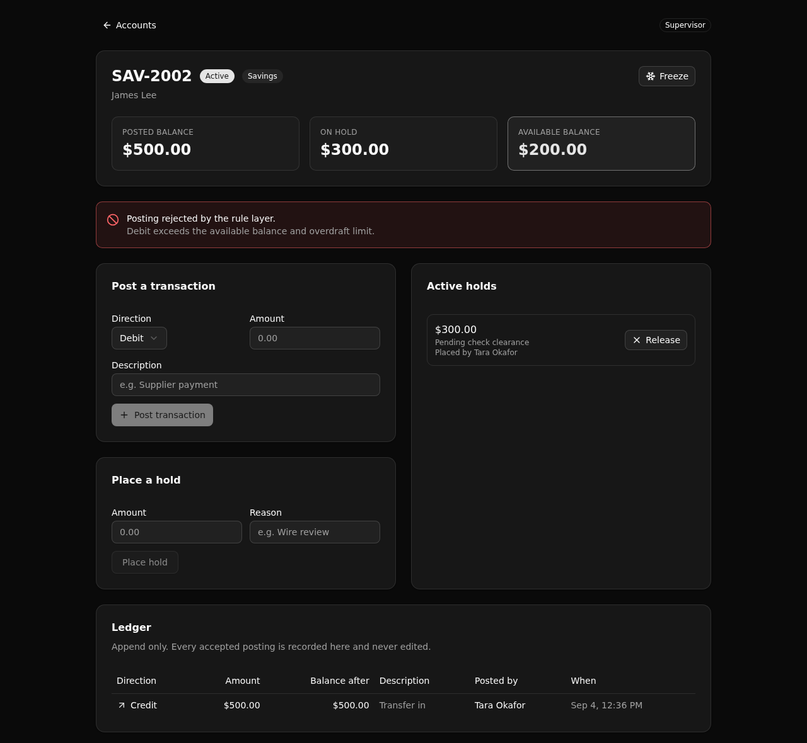

A deposit-servicing backend where posting rules and available balance live in one readable API layer, backed by an immutable ledger, standing in for a legacy core banking servicing stack.

A debit that fits the posted balance is rejected because an active hold makes the available balance too low. The rule layer records why, and writes no ledger row.
A Backend Modernization proof for banking. The servicing rules a legacy monolith buries across its code live here in one place a modernization architect can read, run, and trust.
Status, overdraft, hold-aware available balance, and a supervisor threshold are all enforced by a single endpoint. One thing to read, one thing to audit.
Posted balance minus the sum of active holds, computed once in a shared function that both the posting rule and the account read call. The number on screen is the number the rule enforces.
No endpoint edits or deletes a transaction. The balance moves only when a ledger row is appended, so the ledger is the system of record.
Teller, supervisor, and viewer roles gate each endpoint with a check on the caller's identity. This is middleware and RBAC, never row-level security. A hidden button is still refused if called directly.
Every endpoint hangs off one API group with a pinned canonical slug, so paths stay stable at /api:servicing/....
| Verb | Path | Access | What it enforces |
|---|---|---|---|
| POST | /auth/login | public | Verifies credentials, mints a role scoped token. |
| POST | /accounts/open | teller + | Opens an account, writes an audit event. |
| GET | /accounts/list | any role | Lists accounts with their customers. |
| GET | /account/{account_id} | any role | Derived available balance, ledger, holds, audit trail. |
| POST | /transactions/post | teller + | The posting engine: status, overdraft, hold, and role rules. |
| POST | /holds/place | teller + | Places an active hold, lowering available balance. |
| POST | /holds/release | supervisor | Releases a hold, restoring available balance. |
| POST | /accounts/freeze | supervisor | Toggles active and frozen; frozen blocks postings. |
| POST | /seed | public | Resets and reloads the demo data. |
React, Vite, Tailwind, and shadcn/ui, deriving its paths and types from the query defs (the one contract).
Point your coding agent at this repo and let it bring up a live copy:
Use the Xano template at
https://github.com/xano-scratch/deposit-account-servicing-backend
Clone it, run `npm install`, then `npx xanots login` and
`npm run xano:deploy` to bring up a live copy. Then help me adapt the
posting rules and the schema to my own deposit-servicing domain.Or do it yourself:
git clone https://github.com/xano-scratch/deposit-account-servicing-backend.git
cd deposit-account-servicing-backend
npm install
npx xanots login
npm run xano:deploy